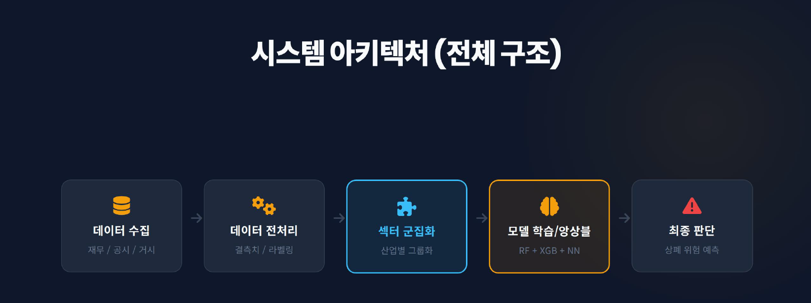
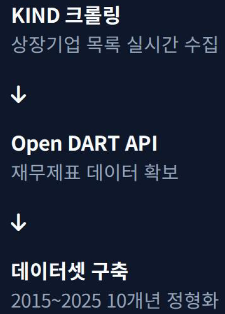
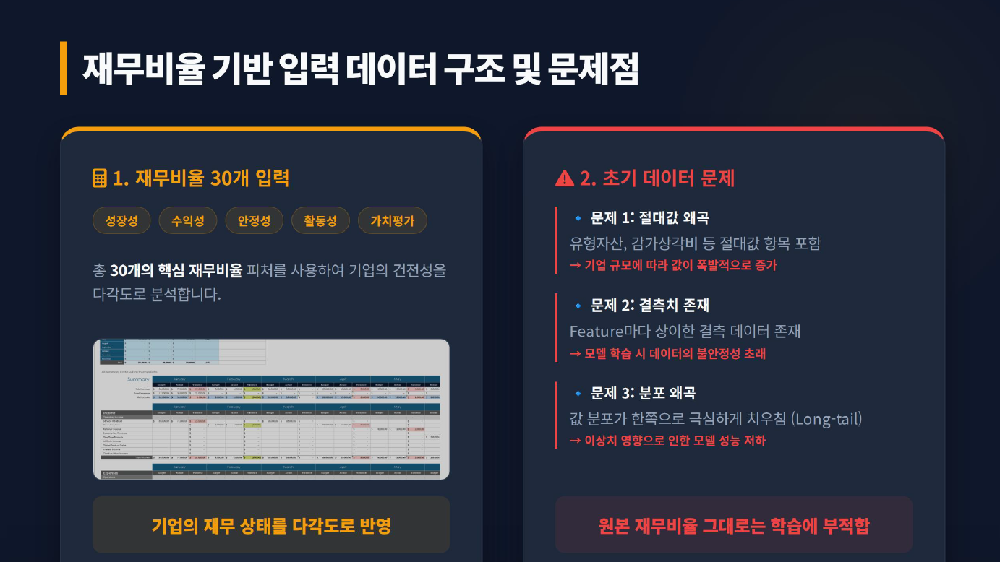
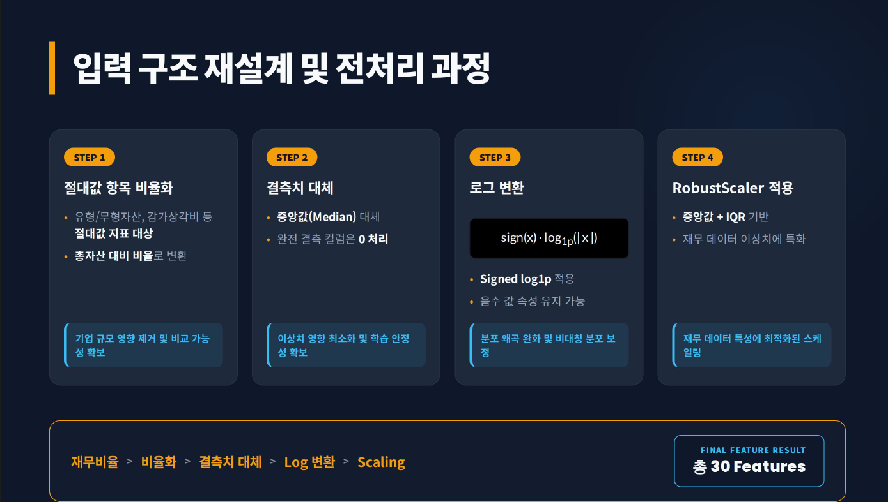
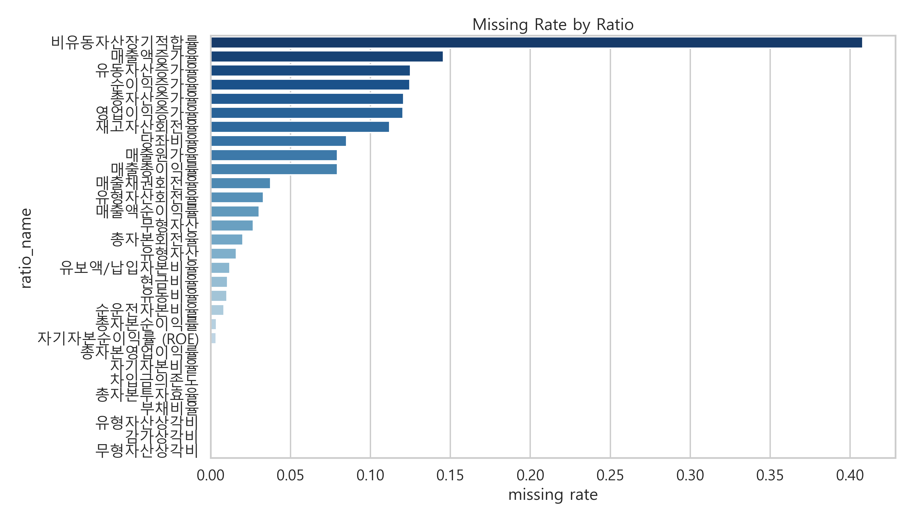
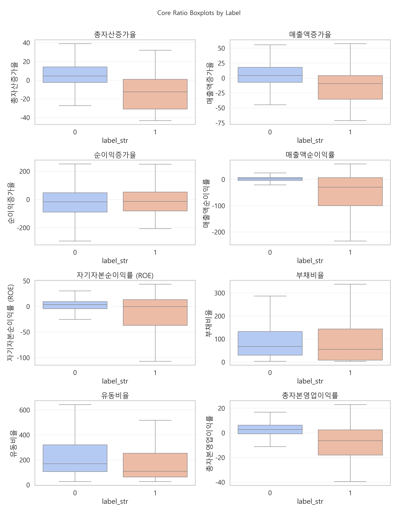
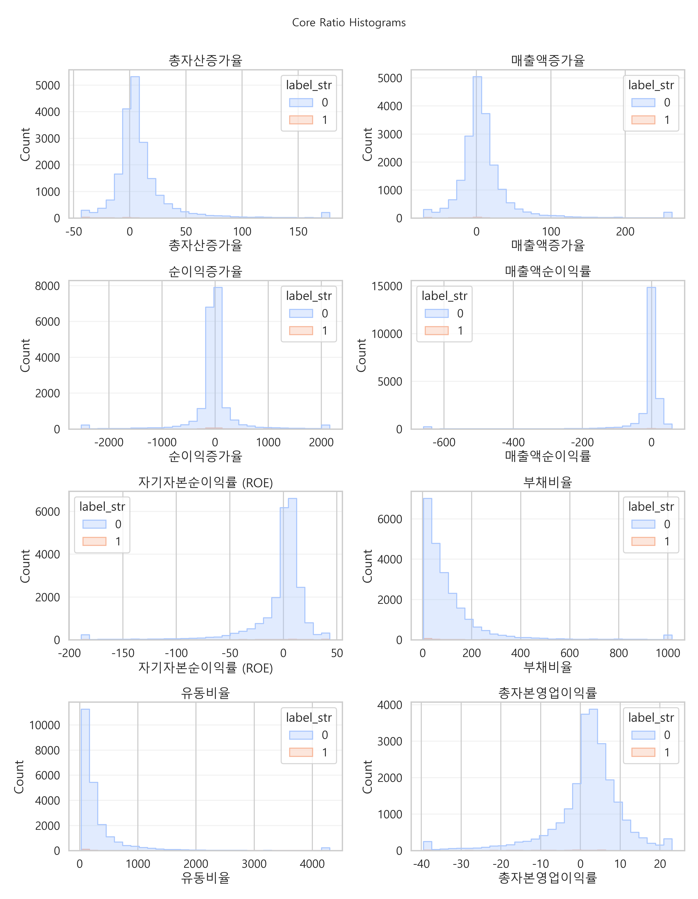
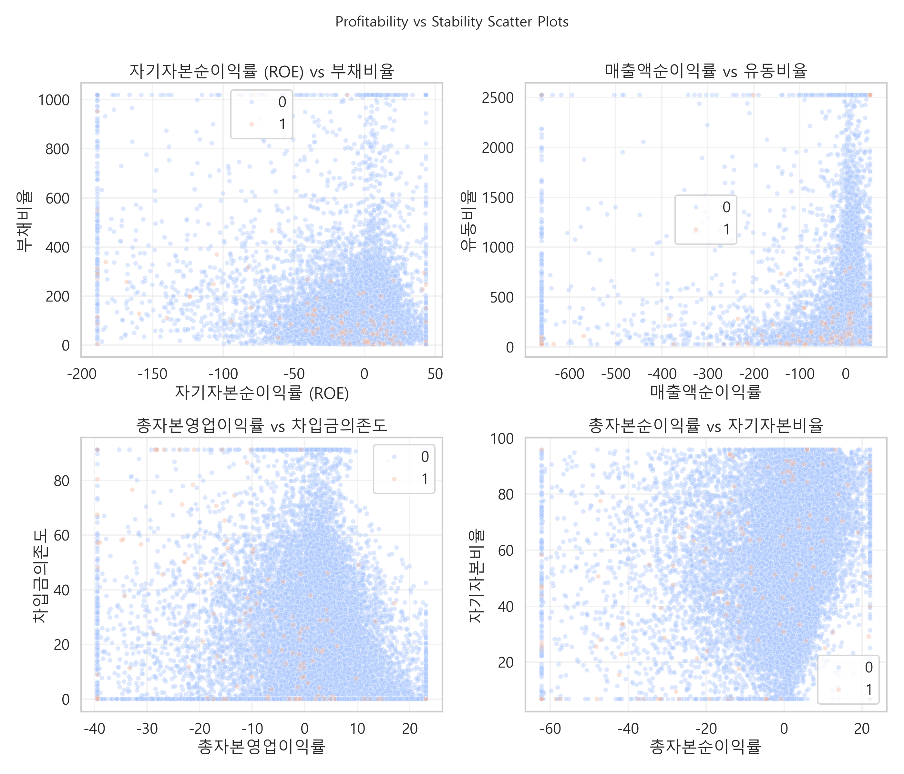

KIND 크롤링과 Open DART API로 기업 목록과 재무제표를 수집했습니다.
Activity 08 · Financial AI
재무비율 기반 상장폐지 위험 예측 모델 개발
코스닥 상장기업의 재무비율 데이터를 수집·전처리하고, 정상 기업과 상장폐지 기업의 재무적 차이를 학습해 위험 신호를 예측하는 조기 경보 모델을 개발했습니다.
재무제표 원문을 투자자가 이해할 수 있는 위험 예측 신호로 전환
Project Introduction
복잡한 재무제표 데이터를 상장폐지 위험 조기 경보 신호로 바꾸는 금융 AI 프로젝트입니다
이 프로젝트는 재무제표 기반 데이터를 정형화하고 머신러닝 모델을 통해 상장폐지 위험을 예측함으로써, 개인 투자자가 기업의 위험 신호를 사전에 파악할 수 있는 데이터 기반 리스크 판단 구조를 만드는 것을 목표로 했습니다.
One Line
재무비율 30개 Feature를 기반으로 코스닥 기업의 상장폐지 위험 가능성을 예측하는 ML 모델
결과물이 눈에 보이는 앱은 아니지만, 데이터 수집, 전처리, EDA, 모델 비교, 성능 해석까지 머신러닝 프로젝트의 전체 흐름을 수행했습니다.
비율화, 결측치 대체, Signed log1p, RobustScaler를 적용했습니다.
결측치, 분포, 상관관계, 라벨별 차이를 시각적으로 검증했습니다.
세 모델을 비교하고 XGBoost의 Confusion Matrix를 해석했습니다.
Problem Definition
상장폐지는 개인 투자자에게 회복 불가능한 손실을 만들 수 있습니다
개인 투자자는 기관이나 외국인 투자자보다 공시 데이터와 재무제표를 해석할 수 있는 정보 접근성과 분석 역량이 부족한 경우가 많습니다. 상장폐지 발생 후에는 투자금 전액 손실에 가까운 치명적 결과로 이어질 수 있기 때문에, 사전에 위험 신호를 포착하는 구조가 필요했습니다.
재무제표 원문은 위험 판단으로 바로 이어지기 어렵습니다
재무 항목과 공시 데이터는 많지만 핵심 정보를 추려내기 어렵고, 기업의 재무 상태 악화를 직관적으로 판단하기 어렵습니다.
정상 기업과 상폐 기업의 재무 패턴을 모델이 학습하도록 설계했습니다
단순 재무제표 조회가 아니라, 특정 기업이 상장폐지 위험군에 가까운지 판단하는 예측 신호를 만드는 것이 목표였습니다.
문제 재정의: 투자자에게 필요한 것은 재무제표 원문이 아니라, 기업의 재무 상태가 위험한지 판단할 수 있는 예측 신호입니다.
ML Pipeline
데이터 수집부터 최종 판단까지의 머신러닝 파이프라인을 구축했습니다
상장폐지 예측을 위해 데이터 수집, 전처리, Feature Engineering, EDA, 모델 학습, 성능 평가를 하나의 흐름으로 구성했습니다.

Logistic Regression
해석이 쉬운 선형 baseline 모델로 사용했습니다.
Random Forest
비선형 패턴을 안정적으로 학습하는 앙상블 모델로 비교했습니다.
XGBoost
복잡한 재무비율 데이터의 비선형 관계를 학습하는 최종 모델로 선택했습니다.
Data Collection
KIND 크롤링과 Open DART API 기반으로 10개년 재무 데이터셋을 구축했습니다
상장폐지 기업과 정상 기업의 재무적 특성을 비교하기 위해 기업 목록과 재무제표 데이터를 수집했습니다. 원천 데이터는 JSON과 CSV 구조가 혼재되어 있어, 분석 가능한 재무비율 데이터셋으로 정형화하는 과정이 필요했습니다.
개
개
개
2015~2025년
Collection Flow
KIND 목록 수집과 DART 재무제표 호출을 연결했습니다
- KIND 크롤링으로 상장·상폐 기업 목록 확보
- Open DART API 호출로 기업별 재무제표 데이터 수집
- 기업별 JSON/CSV 저장 후 재무비율 데이터셋으로 정리
- API 요청 제한, 데이터 누락, 항목명 불일치를 보완

Input Data
재무비율 30개 Feature로 기업의 재무 상태를 표현했습니다
기업의 재무 상태를 다각도로 반영하기 위해 성장성, 수익성, 안정성, 활동성, 가치평가 영역의 핵심 재무비율을 구성했습니다. 원본 재무비율은 결측치, 극단값, 기업 규모 차이의 영향을 받기 때문에 그대로 학습하기 어렵다고 판단했습니다.

절대값 왜곡
기업 규모에 따라 값이 크게 달라져 대기업과 소기업의 규모 차이가 모델에 과도하게 반영될 수 있었습니다.
결측치 존재
일부 기업은 특정 재무 항목이 공시되지 않거나 항목명이 다르게 표기되었습니다.
분포 왜곡
재무비율은 극단값과 Long-tail 분포가 자주 나타나 모델 성능을 저하시킬 수 있었습니다.
Preprocessing
기업 크기가 아니라 재무 상태의 패턴을 학습하도록 입력 구조를 재설계했습니다
금융 데이터는 기업 규모, 이상치, 결측치의 영향을 크게 받습니다. 따라서 비율화, 결측치 대체, Signed log1p 변환, RobustScaler를 순서대로 적용했습니다.
유형자산, 감가상각비 등 규모성 지표를 총자산 대비 비율로 변환했습니다.
Feature별 결측치는 중앙값으로 대체하고 완전 결측 컬럼은 0 처리했습니다.
sign(x) × log1p(|x|)로 음수 속성을 유지하며 Long-tail을 완화했습니다.
중앙값과 IQR 기반 스케일링으로 극단값 영향을 줄였습니다.

EDA Validation
정제된 데이터의 특성을 시각적으로 검증했습니다
결측치 분포, 정상 기업과 상장폐지 기업의 주요 재무비율 분포, 상관관계와 산점도를 확인해 전처리 결과와 데이터 특성을 점검했습니다.




Model Comparison
Logistic Regression, Random Forest, XGBoost를 비교하고 최종 모델을 선정했습니다
상장폐지 위험 기업을 예측하기 위해 세 가지 모델을 학습하고 Precision, Recall, F1-score를 기준으로 비교했습니다. 단순 정확도보다 오탐과 미탐의 균형을 확인하는 것이 중요했습니다.
Model Metrics
| Model | Precision | Recall | F1-score |
|---|---|---|---|
| Logistic Regression | 0.1935 | 0.5000 | 0.2791 |
| Random Forest | 0.3913 | 0.3750 | 0.3830 |
| XGBoost | 0.4737 | 0.3750 | 0.4186 |
F1-score Comparison
XGBoost는 Precision과 F1-score에서 가장 높은 성능을 보여 최종 모델로 선택했습니다.
기본 임계값 0.5를 고정하지 않고 Precision-Recall 균형을 고려해 Threshold를 탐색했습니다.
Final Model Analysis
Confusion Matrix로 위험 탐지와 오탐지 구조를 해석했습니다
최종 모델인 XGBoost는 복잡한 재무비율 데이터의 비선형 패턴을 학습하는 데 적합했고, ROC-AUC 0.9049로 위험 기업 구분 가능성을 확인했습니다.
Confusion Matrix
Predicted 정상
Predicted 위험
Actual 정상
TN
3385
정상 기업 식별 성공
FP
10
정상 기업 오탐지
Actual 위험
FN
15
위험 기업 미탐지
TP
9
위험 기업 탐지 성공
정상 기업 대부분을 정상으로 분류
TN 3385로 불필요한 경고를 줄이는 방향의 안정성을 확인했습니다.
미탐지 개선 필요
실제 위험 기업 15건을 놓쳤기 때문에 조기 경보 모델로 발전하려면 Recall 개선이 중요합니다.
초기 가능성 확인
실무 적용 수준으로 가기 위해 데이터 확장과 threshold 고도화가 필요하다는 결론을 얻었습니다.
Roadmap
데이터 확장과 모델 고도화를 통해 실전형 리스크 엔진으로 발전시킬 계획입니다
현재 모델은 재무비율 기반 초기 모델입니다. 상장폐지는 공시, 시장 가격, 거래량, 거시경제 흐름, 산업 특성 등 다양한 요인의 영향을 받기 때문에 입력 데이터를 확장하고 모델 구조를 고도화할 계획입니다.
Improvement Plan
성능 개선과 입력 고도화를 함께 추진합니다
- Group Split 적용으로 시계열 데이터 누수 방지
- Threshold 세분화와 위험 경고 등급 조정
- LightGBM, CatBoost 추가 비교 및 Bayesian Optimization
- 공시 텍스트, 거시경제 변수, 시계열 파생 변수 결합
- 산업 유사도 기반 섹터 군집화와 군집별 독립 모델 학습
Result
재무 데이터 수집부터 모델 성능 검증까지 수행한 금융 AI 프로젝트입니다
재무제표와 공시 기반 데이터를 수집하고, 재무비율 30개 Feature를 구성하여 상장폐지 위험 예측 모델을 개발했습니다. 데이터 수집, 전처리, EDA, 모델 학습, 성능 비교, Confusion Matrix 분석까지 전체 과정을 수행했습니다.
주요 성과
- KIND 크롤링과 Open DART API 기반 대규모 재무 데이터 수집
- 정상 기업 2,766개, 상장폐지 기업 354개 데이터 구축
- 성장성, 수익성, 안정성, 활동성, 가치평가 기반 30개 재무비율 Feature 구성
- 비율화, 결측치 대체, Signed log1p, RobustScaler 전처리 적용
- Logistic Regression, Random Forest, XGBoost 모델 성능 비교
- XGBoost 최종 모델 F1-score 0.4186, ROC-AUC 0.9049 달성
What I Learned
AI 모델 개발에서 가장 중요한 것은 모델 자체보다 데이터 수집과 전처리였습니다
재무 데이터는 결측치, 이상치, 분포 왜곡, 기업 규모 차이가 크기 때문에 문제에 맞는 Feature 설계와 전처리 전략이 모델 성능에 직접적인 영향을 준다는 점을 체감했습니다.